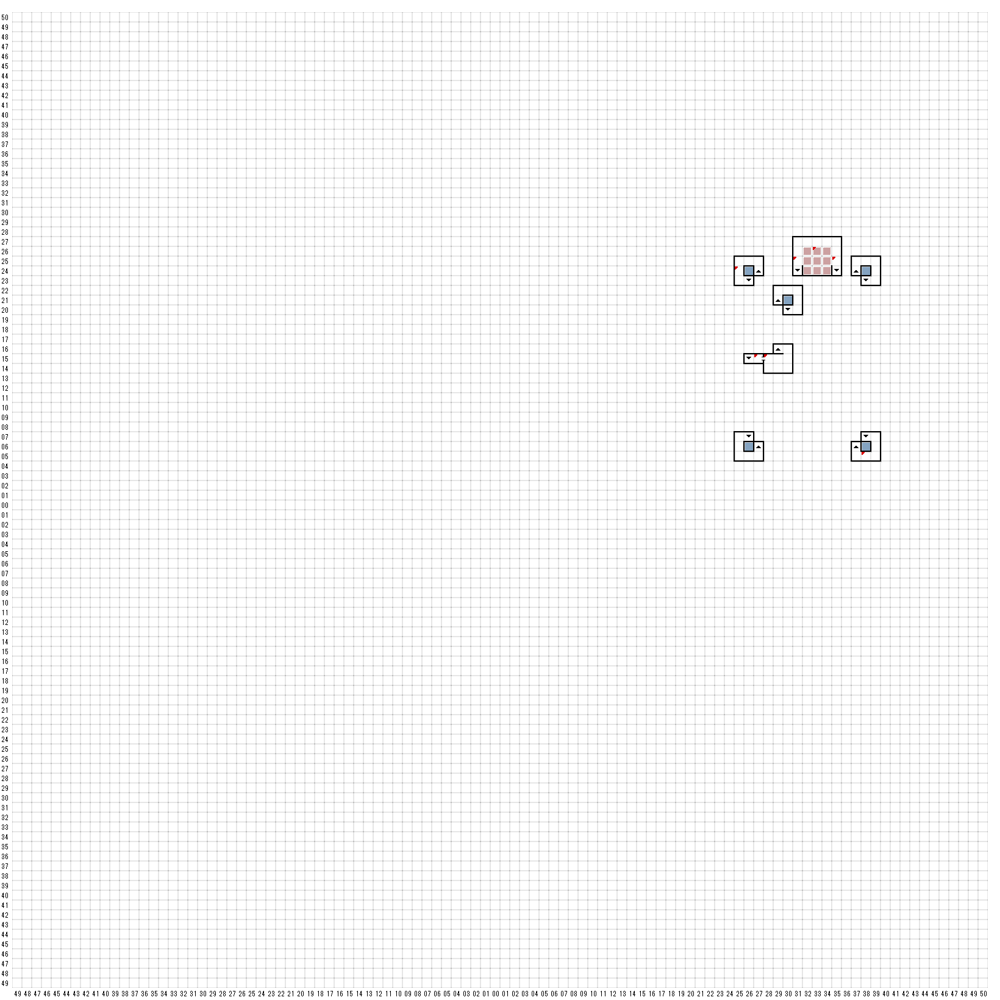

【 東：25，北：24 】
突然、支え木が崩れ落ちた！
（全員ダメージ）
【 東：27，北：15 】
鐘楼の
開放
厳禁
【 東：28，北：15 】
巨大な吹き抜けから上を見上げても、
見えるのはただ暗闇だけであった。
しかし床の上には、小さな
ネズミのような生きものの死骸、血の塊、
ふんなど、上から落ちてきたものが
散乱していた。
【 東：31，北：25 】
そこはばるこのーになっており、
吹き抜けから下の様子がうかがえた。
下には祭壇があるようであった。
【 東：33，北：26 】
降りられる
【 東：35，北：25 】
そこはばるこのーになっており、
吹き抜けから下の様子がうかがえた。
下には祭壇があるようであった。
【 東：38，北：5 】
前方の階段を駆け上がる、
ガタガタという足音が聞こえる！